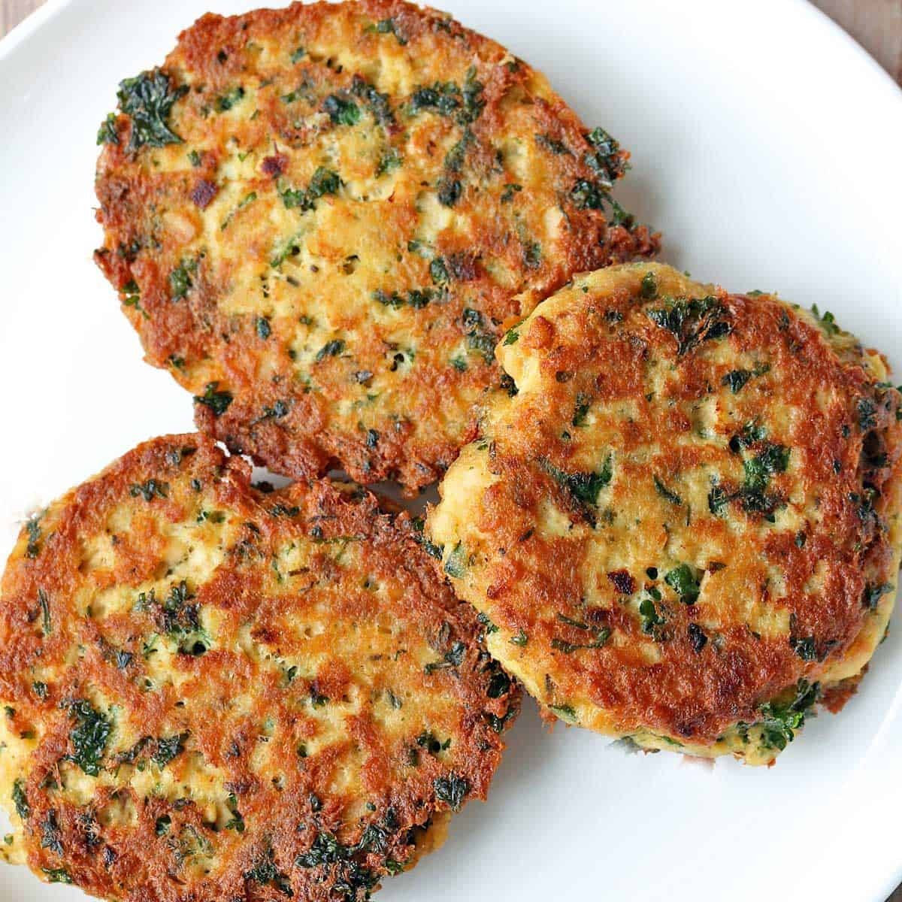

Salmon Cakes

Salmon Cakes
This recipe will make some salmon cakes.
Ingredients
- 2 strips bacon, cooked until crispy, crumbled, bacon fat reserved
- 1/4 cup chopped onion
- 1 egg
- 1/2 cup mayonnaise
- 2 teaspoons Dijon mustard
- 1/2 teaspoon sugar
- 1/2 lemon, zested
- 1 14-ounce can wild salmon, checked for large bones
- 1 baked or boiled russet potato, peeled, and fluffed with a fork
- 1/4 cup bread crumbs
- 2 tablespoons grated parmesan
- Freshly ground black pepper
- 1/2 cup vegetable oil
Steps
- Heat 1 tablespoon of the reserved bacon fat in a small saute pan over low heat. Add the onions and cook until translucent. Cool the onions for a bit.
- Mix the bacon, onion, egg, mayonnaise, mustard, sugar, and lemon zest in a bowl. Add the salmon and potato, mixing gently after each addition. Form the mixture into 12 small patties. In a shallow dish, combine the bread crumbs, Parmesan, and pepper, to taste. Coat the patties in the bread crumb topping. Heat 1/4 cup of the oil in a large saute pan over medium heat, and cook the salmon cakes in batches until golden, about 3 to 4 minutes per side. Add more oil, as necessary. Arrange on a serving platter and serve.
Back to Homepage